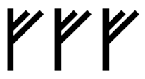
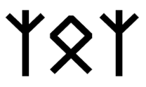
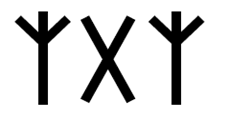
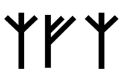
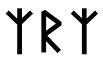
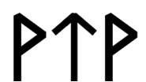
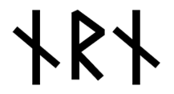

Эти формулы состоят из трех рун, причем крайние повторяются. Их задача – усилить центральную руну, которая выражает основное намерение. Дублированные руны по краям – это направленное действие на объект (руну в центре).
Например, заклинание Кано – Феху – Кано открывает материальный поток. Активирующей аффирмацией здесь будет: «открытие дополнительного финансового потока».
Приведу еще примеры.

В данном случае мы утраиваем энергию Феху, ее материальную ипостась. На что направить эту преумноженную мощь, практик решает сам. Усиливать можно практически любую энергию. Но это самое простое, а вот выстраивать логику разных рун для усиления той или иной энергии – это уже мастерство, к которому каждый должен стремиться.
Рассмотрите следующий ряд триадных защитных заклинаний. Обратите внимание на то, что в них меняется только объект воздействия, а структура заклинаний остается прежней.

Альгиз – Оттила – Альгиз. Объектом выступает Оттила, символизирующая род, семью и любую семейную недвижимость. Направленное действие – это Альгиз, или защита.
Попробуйте сами расписать логику следующих ставов, они аналогичны приведенному выше. Помните, что объект стоит в центре, а направляющее действие – по бокам.

Альгиз – Гебо – Альгиз.

Альгиз – Феху – Альгиз.

Альгиз – Райдо – Альгиз.

Вуньо – Тейваз – Вуньо.

Это сильнейший триадный став на избавление от темного воздействия. Наутиз – Райдо – Наутиз. В данном случае центральная Райдо символизирует путь духа. Наутиз – это в некотором смысле руна креста, ноши, которую нужно нести, некоего испытания
Альгиз – Соулу – Альгиз. Объект воздействия – Соулу, солнечная, позитивная руна. Альгиз – это защита.